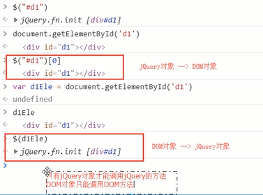
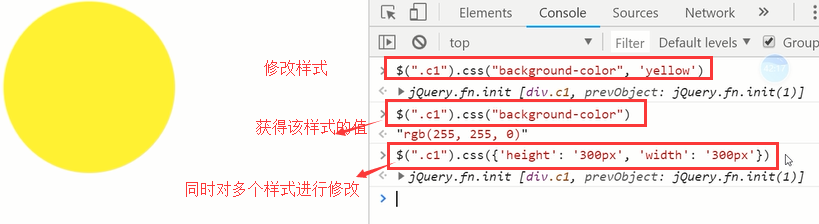

原文连接:https://www.cnblogs.com/changxin7/p/11520010.html
jQuery
jQuery介绍
1.jQuery是一个轻量级的、兼容多浏览器的JavaScript库。
2.jQuery使用户能够更方便地处理HTML Document、Events、实现动画效果、方便地进行Ajax交互，能够极大地简化JavaScript编程。它的宗旨就是：“Write less, do more.“
jQuery的优势
- 一款轻量级的JS框架。jQuery核心js文件才几十kb，不会影响页面加载速度。
- 丰富的DOM选择器,jQuery的选择器用起来很方便，比如要找到某个DOM对象的相邻元素，JS可能要写好几行代码，而jQuery一行代码就搞定了，再比如要将一个表格的隔行变色，jQuery也是一行代码搞定。
- 链式表达式。jQuery的链式操作可以把多个操作写在一行代码里，更加简洁。
- 事件、样式、动画支持。jQuery还简化了js操作css的代码，并且代码的可读性也比js要强。
- Ajax操作支持。jQuery简化了AJAX操作，后端只需返回一个JSON格式的字符串就能完成与前端的通信。
- 跨浏览器兼容。jQuery基本兼容了现在主流的浏览器，不用再为浏览器的兼容问题而伤透脑筋。
- 插件扩展开发。jQuery有着丰富的第三方的插件，例如：树形菜单、日期控件、图片切换插件、弹出窗口等等基本前端页面上的组件都有对应插件，并且用jQuery插件做出来的效果很炫，并且可以根据自己需要去改写和封装插件，简单实用。
原生DOM的写法就是写JS代码，而以后我们多数都用jQuery来写，因为jQuery的优势很多，看上面，并且查找标签的方式有很多，比原生的DOM丰富的多，很便利，还有重要的一点就是不需要考虑浏览器的兼容性，因为jQuery做到了各大浏览器兼容的功能。
jQuery内容：
- 选择器
- 筛选器
- 样式操作
- 文本操作
- 属性操作
- 文档处理
- 事件
- 动画效果
- 插件
- each、data、Ajax
下载链接：jQuery官网，首先需要下载这个jQuery的文件，然后在HTML文件中引入这个文件，就可以使用这个文件中帮我们提供的jquery的接口了。
中文文档：jQuery AP中文文档

用压缩的也行，不用压缩的也行，文件都不大，对页面内容的加载速度差的不是很多，如果文件大很多，就考虑压缩版的，一般线上都是压缩版的，尽量提高页面加载速度。
jQuery的引入方式有两种：
1.直接下载文件到本地（最常用），从本地中导入
2.使用文件的网络地址，就像我们img标签里面的那个src的用法差不多。
引入完之后，就可以直接使用jQuery的语法来写了，但是还是要写在script标签里面，并且要注意引入顺序，先引入文件，再在script标签里面写jQuery的代码，先导入再使用。
会报错：在浏览器的调试窗口的console里面可以看到，记住这个昂，以后出现这个错误，不能问昂~~~
jQuery版本
- 1.x：兼容IE678,使用最为广泛的，官方只做BUG维护，功能不再新增。因此一般项目来说，使用1.x版本就可以了，最终版本：1.12.4 (2016年5月20日)
- 2.x：不兼容IE678，很少有人使用，官方只做BUG维护，功能不再新增。如果不考虑兼容低版本的浏览器可以使用2.x，最终版本：2.2.4 (2016年5月20日)
- 3.x：不兼容IE678，只支持最新的浏览器。需要注意的是很多老的jQuery插件不支持3.x版。目前该版本是官方主要更新维护的版本，我们学习就用3.几的就行了，工作中如果需要兼容IE678，就用1.几版本的就行，2.几版本的就别用了。
维护IE678是一件让人头疼的事情，一般我们都会额外加载一个CSS和JS单独处理。值得庆幸的是使用这些浏览器的人也逐步减少，PC端用户已经逐步被移动端用户所取代，如果没有特殊要求的话，一般都会选择放弃对678的支持。
jQuery对象（先看一下jQuery语法和选择器我们再回来看这个对象）
jQuery对象就是通过jQuery包装DOM对象后产生的对象。jQuery对象是 jQuery独有的。如果一个对象是 jQuery对象，那么它就可以使用jQuery里提供的方法：例如$(“#i1”).html()。
$("#i1").html()的意思是：获取id值为 i1的元素的html代码。其中 html()是jQuery里的方法。
相当于： document.getElementById("i1").innerHTML;
虽然 jQuery对象是包装 DOM对象后产生的，但是 jQuery对象无法使用 DOM对象的任何方法，同理 DOM对象也没不能使用 jQuery里的方法。
一个约定，我们在声明一个jQuery对象变量的时候在变量名前面加上$：
var $variable = jQuery对像
var variable = DOM对象
$variable[0]//jQuery对象转成DOM对象，通过一个jQuery对象+[0]索引零，就变成了DOM对象，就可以使用JS的代码方法了，DOM对象转换成jQuery对象：$(DOM对象)，通过$符号包裹一下就可以了拿上面那个例子举例，jQuery对象和DOM对象的使用：
$("#i1").html();//jQuery对象可以使用jQuery的方法
$("#i1")[0].innerHTML;// DOM对象使用DOM的方法
jQuery基础语法
$(selector).action() #$(selector)找到某个标签，.action()通过这个标签对象调用它的一些方法。
查找标签
基本选择器（同css）
id选择器：
$("#id") #不管找什么标签，用什么选择器，都必须要写$("")，引号里面再写选择器，通过jQuery找到的标签对象就是一个jQuery对象，用原生JS找到的标签对象叫做DOM对象，看我们上面的jQuery对象部分的内容标签选择器：
$("tagName")class选择器：
$(".className")配合使用：
$("div.c1") // 找到有c1 class类的div标签所有元素选择器：
$("*")组合选择器：
$("#id, .className, tagName")层级选择器：（同css）
x和y可以为任意选择器
$("x y");// x的所有后代y（子子孙孙）
$("x > y");// x的所有儿子y（儿子）
$("x + y")// 找到所有紧挨在x后面的y
$("x ~ y")// x之后所有的兄弟y基本筛选器（选择之后进行过滤）：
:first // 第一个
:last // 最后一个
:eq(index)// 索引等于index的那个元素
:even // 匹配所有索引值为偶数的元素，从 0 开始计数
:odd // 匹配所有索引值为奇数的元素，从 0 开始计数
:gt(index)// 匹配所有大于给定索引值的元素
:lt(index)// 匹配所有小于给定索引值的元素
:not(元素选择器)// 移除所有满足not条件的标签
:has(元素选择器)// 选取所有包含一个或多个标签在其内的标签(指的是从后代元素找)例子：
$("div:has(h1)")// 找到所有后代中有h1标签的div标签，意思是首先找到所有div标签，把这些div标签的后代中有h1的div标签筛选出来
$("div:has(.c1)")// 找到所有后代中有c1样式类（类属性class='c1'）的div标签
$("li:not(.c1)")// 找到所有不包含c1样式类的li标签
$("li:not(:has(a))")// 找到所有后代中不含a标签的li标签练习（先看一个jQuery的click事件绑定）：
自定义模态框，使用jQuery实现弹出和隐藏功能。jQuery版自定义模态框:
<!DOCTYPE html>
<html lang="zh-CN">
<head>
<meta charset="UTF-8">
<meta http-equiv="x-ua-compatible" content="IE=edge">
<meta name="viewport" content="width=device-width, initial-scale=1">
<title>自定义模态框</title>
<style>
.cover {
position: fixed;
left: 0;
right: 0;
top: 0;
bottom: 0;
background-color: darkgrey;
z-index: 999;
}
.modal {
width: 600px;
height: 400px;
background-color: white;
position: fixed;
left: 50%;
top: 50%;
margin-left: -300px;
margin-top: -200px;
z-index: 1000;
}
.hide {
display: none;
}
</style>
</head>
<body>
<input type="button" value="弹" id="i0">
<div class="cover hide"></div>
<div class="modal hide">
<label for="i1">姓名</label>
<input id="i1" type="text">
<label for="i2">爱好</label>
<input id="i2" type="text">
<input type="button" id="i3" value="关闭">
</div>
<script src="https://cdn.bootcss.com/jquery/3.2.1/jquery.min.js"></script>
<script>
var tButton = $("#i0")[0];
tButton.onclick=function () { #jQuery绑定事件的时候也有个简单的方式，往后面学
var coverEle = $(".cover")[0];
var modalEle = $(".modal")[0];
$(coverEle).removeClass("hide");
$(modalEle).removeClass("hide"); #jQuery版： #$(".cover,.modal").removeClass('hide'); #看完这个之后，去下面先学一下下面的标签操作中的样式操作那一节
};
var cButton = $("#i3")[0];
cButton.onclick=function () {
var coverEle = $(".cover")[0];
var modalEle = $(".modal")[0];
$(coverEle).addClass("hide");
$(modalEle).addClass("hide"); #jQuery版： #$(".cover,.modal").addClass('hide');
}
</script>
</body>
</html>属性选择器：
[attribute]
[attribute=value]// 属性等于
[attribute!=value]// 属性不等于
例子：
// 示例,多用于input标签
<input type="text">
<input type="password">
<input type="checkbox">
$("input[type='checkbox']");// 取到checkbox类型的input标签
$("input[type!='text']");// 取到类型不是text的input标签表单筛选器（多用于找form表单里面出现的input标签，当然通过属性选择器找肯定也是没问题的，这样就是写着简单一些）：
:text
:password:file
:radio
:checkbox
:submit
:reset
:button例子：
$(":checkbox") // 找到所有的checkbox
表单对象属性:
:enabled
:disabled
:checked
:selected
注意checked：
其他例子：
找到可用的input标签
<form>
<input name="email" disabled="disabled" />
<input name="id" />
</form>
$("input:enabled") // 找到可用的input标签
找到被选中的option：
<select id="s1">
<option value="beijing">北京市</option>
<option value="shanghai">上海市</option>
<option selected value="guangzhou">广州市</option>
<option value="shenzhen">深圳市</option>
</select>
$(":selected") // 找到所有被选中的option
筛选器方法（将来用的很多）
选择器或者筛选器选择出来的都是对象，而筛选器方法其实就是通过对象来调用一个进一步过滤作用的方法，写在对象后面加括号，不再是写在选择器里面的了。
下一个元素：
$("#id").next()
$("#id").nextAll()
$("#id").nextUntil("#i2") #直到找到id为i2的标签就结束查找，不包含它
加两个id属性作为一会筛选的时候的区分：
上一个元素：
$("#id").prev()
$("#id").prevAll()
$("#id").prevUntil("#i2")
父亲元素：
$("#id").parent()
$("#id").parents() // 查找当前元素的所有的父辈元素（爷爷辈、祖先辈都找到）$("#id").parentsUntil('body') // 查找当前元素的所有的父辈元素，直到遇到匹配的那个元素为止，这里直到body标签，不包含body标签，基本选择器都可以放到这里面使用。
儿子和兄弟元素：
$("#id").children();// 儿子们
$("#id").siblings();// 兄弟们，不包含自己，.siblings('#id')，可以在添加选择器进行进一步筛选
查找
搜索所有与指定表达式匹配的元素。这个函数是找出正在处理的元素的后代元素的好方法。
$("div").find("p")
等价于$("div p")
筛选
筛选出与指定表达式匹配的元素集合。这个方法用于缩小匹配的范围。用逗号分隔多个表达式。
$("div").filter(".c1") // 从结果集中过滤出有c1样式类的，从所有的div标签中过滤出有class='c1'属性的div，和find不同，find是找div标签的子子孙孙中找到一个符合条件的标签
等价于 $("div.c1")
补充（和前面使用冒号的一样 :first等，只不过冒号的那个是写在选择器里面的，而下面的这几个是方法，如此而已，就不说啦）：
.first() // 获取匹配的第一个元素
.last() // 获取匹配的最后一个元素
.not() // 从匹配元素的集合中删除与指定表达式匹配的元素
.has() // 保留包含特定后代的元素，去掉那些不含有指定后代的元素。
.eq() // 索引值等于指定值的元素
示例：左侧菜单示例，也是今天的作业啦，要的效果是下面这样的：
<!DOCTYPE html>
<html lang="en">
<head>
<meta charset="UTF-8">
<meta http-equiv="x-ua-compatible" content="IE=edge">
<meta name="viewport" content="width=device-width, initial-scale=1">
<title>左侧菜单示例</title>
<style>
.left {
position: fixed;
left: 0;
top: 0;
width: 20%;
height: 100%;
background-color: rgb(47, 53, 61);
}
.right {
width: 80%;
height: 100%;
}
.menu {
color: white;
}
.title {
text-align: center;
padding: 10px 15px;
border-bottom: 1px solid #23282e;
}
.items {
background-color: #181c20;
}
.item {
padding: 5px 10px;
border-bottom: 1px solid #23282e;
}
.hide {
display: none;
}
</style>
</head>
<body>
<div class="left">
<div class="menu">
<div class="title">菜单一</div>
<div class="items">
<div class="item">111</div>
<div class="item">222</div>
<div class="item">333</div>
</div>
<div class="title">菜单二</div>
<div class="items hide">
<div class="item">111</div>
<div class="item">222</div>
<div class="item">333</div>
</div>
<div class="title">菜单三</div>
<div class="items hide">
<div class="item">111</div>
<div class="item">222</div>
<div class="item">333</div>
</div>
</div>
</div>
<div class="right"></div>
<script src="https://cdn.bootcss.com/jquery/3.2.1/jquery.min.js"></script>
<script>
$(".title").click(function (){ // jQuery绑定事件
// 隐藏所有class里有.items的标签
$(".items").addClass("hide"); //批量操作
$(this).next().removeClass("hide");
});
</script>
不同写法：
一句话的写法：
操作标签
样式操作
样式类（添加删除class类的值来修改样式）
addClass();// 添加指定的CSS类名。
removeClass();// 移除指定的CSS类名。
hasClass();// 判断样式存不存在
toggleClass();// 切换CSS类名，如果有就移除，如果没有就添加。
示例：开关灯和模态框
CSS（直接修改css的属性来修改样式）
css("color","red")//DOM操作：tag.style.color="red"
示例：
$("p").css("color", "red"); //将所有p标签的字体设置为红色

位置操作
offset()// 获取匹配元素在当前窗口的相对偏移或设置元素位置
position()// 获取匹配元素相对父元素的偏移，不能设置位置
$(window).scrollTop() //滚轮向下移动的距离
$(window).scrollLeft() //滚轮向左移动的距离
.offset()方法允许我们检索一个元素相对于文档（document）的当前位置。
和 .position()的差别在于： .position()获取相对于它最近的具有相对位置(position:relative或position:absolute)的父级元素的距离，如果找不到这样的元素，则返回相对于浏览器的距离。看例子：

通过offset设置位置偏移
示例：返回顶部示例：
<!DOCTYPE html>
<html lang="zh-CN">
<head>
<meta charset="UTF-8">
<meta http-equiv="x-ua-compatible" content="IE=edge">
<meta name="viewport" content="width=device-width, initial-scale=1">
<title>位置相关示例之返回顶部</title>
<style>
.c1 {
width: 100px;
height: 200px;
background-color: red;
}
.c2 {
height: 50px;
width: 50px;
position: fixed;
bottom: 15px;
right: 15px;
background-color: #2b669a;
}
.hide {
display: none;
}
.c3 {
height: 100px;
}
</style>
</head>
<body>
<button id="b1" class="btn btn-default">点我</button>
<div class="c1"></div>
<div class="c3">1</div>
<div class="c3">2</div>
<div class="c3">3</div>
<div class="c3">4</div>
<div class="c3">5</div>
<div class="c3">6</div>
<div class="c3">7</div>
<div class="c3">8</div>
<div class="c3">9</div>
<div class="c3">10</div>
<div class="c3">11</div>
<div class="c3">12</div>
<div class="c3">13</div>
<div class="c3">14</div>
<div class="c3">15</div>
<div class="c3">16</div>
<div class="c3">17</div>
<div class="c3">18</div>
<div class="c3">19</div>
<div class="c3">20</div>
<div class="c3">21</div>
<div class="c3">22</div>
<div class="c3">23</div>
<div class="c3">24</div>
<div class="c3">25</div>
<div class="c3">26</div>
<div class="c3">27</div>
<div class="c3">28</div>
<div class="c3">29</div>
<div class="c3">30</div>
<div class="c3">31</div>
<div class="c3">32</div>
<div class="c3">33</div>
<div class="c3">34</div>
<div class="c3">35</div>
<div class="c3">36</div>
<div class="c3">37</div>
<div class="c3">38</div>
<div class="c3">39</div>
<div class="c3">40</div>
<div class="c3">41</div>
<div class="c3">42</div>
<div class="c3">43</div>
<div class="c3">44</div>
<div class="c3">45</div>
<div class="c3">46</div>
<div class="c3">47</div>
<div class="c3">48</div>
<div class="c3">49</div>
<div class="c3">50</div>
<div class="c3">51</div>
<div class="c3">52</div>
<div class="c3">53</div>
<div class="c3">54</div>
<div class="c3">55</div>
<div class="c3">56</div>
<div class="c3">57</div>
<div class="c3">58</div>
<div class="c3">59</div>
<div class="c3">60</div>
<div class="c3">61</div>
<div class="c3">62</div>
<div class="c3">63</div>
<div class="c3">64</div>
<div class="c3">65</div>
<div class="c3">66</div>
<div class="c3">67</div>
<div class="c3">68</div>
<div class="c3">69</div>
<div class="c3">70</div>
<div class="c3">71</div>
<div class="c3">72</div>
<div class="c3">73</div>
<div class="c3">74</div>
<div class="c3">75</div>
<div class="c3">76</div>
<div class="c3">77</div>
<div class="c3">78</div>
<div class="c3">79</div>
<div class="c3">80</div>
<div class="c3">81</div>
<div class="c3">82</div>
<div class="c3">83</div>
<div class="c3">84</div>
<div class="c3">85</div>
<div class="c3">86</div>
<div class="c3">87</div>
<div class="c3">88</div>
<div class="c3">89</div>
<div class="c3">90</div>
<div class="c3">91</div>
<div class="c3">92</div>
<div class="c3">93</div>
<div class="c3">94</div>
<div class="c3">95</div>
<div class="c3">96</div>
<div class="c3">97</div>
<div class="c3">98</div>
<div class="c3">99</div>
<div class="c3">100</div>
<button id="b2" class="btn btn-default c2 hide">返回顶部</button>
<script src="jquery-3.2.1.min.js"></script>
<script>
//$("#b1").on("click", function () {
// $(".c1").offset({left: 200, top:200});
//});
// $(window),window对象是还记得吗？是不是全局的一个对象啊，整个页面窗口对象，通过$符号包裹起来就变成了一个jQuery对象了
$(window).scroll(function () {
if ($(window).scrollTop() > 100) { //当滚动条相对顶部位置的滚动距离大于100的时候才显示那个返回顶部的按钮，这个100你可以理解为窗口和整个页面文档的距离，鼠标向下滑动的距离
$("#b2").removeClass("hide");
}else {
$("#b2").addClass("hide");
}
});
$("#b2").on("click", function () { //jQuery绑定事件第二天我们在学，先作为了解
$(window).scrollTop(0);
})
</script>
</body>
</html>
尺寸：
height() //盒子模型content的大小，就是我们设置的标签的高度和宽度
width()
innerHeight() //内容content高度 + 两个padding的高度
innerWidth()
outerHeight() //内容高度 + 两个padding的高度 + 两个border的高度，不包括margin的高度，因为margin不是标签的，是标签和标签之间的距离
outerWidth()
文本操作
HTML代码：
html()// 取得第一个匹配元素的html内容，包含标签内容
html(val)// 设置所有匹配元素的html内容，识别标签，能够表现出标签的效果
文本值：
text()// 取得所有匹配元素的内容，只有文本内容，没有标签
text(val)// 设置所有匹配元素的内容，不识别标签，将标签作为文本插入进去

值：
val()// 取得第一个匹配元素的当前值
val(val)// 设置所有匹配元素的值
val([val1, val2])// 设置多选的checkbox、多选select的值
例如：
<input type="checkbox" value="basketball" name="hobby">篮球
<input type="checkbox" value="football" name="hobby">足球
<select multiple id="s1">
<option value="1">1</option>
<option value="2">2</option>
<option value="3">3</option>
</select>
设置值：
$("[name='hobby']").val(['basketball', 'football']);
$("#s1").val(["1", "2"])
示例：
获取被选中的checkbox或radio的值：
<label for="c1">女</label>
<input name="gender" id="c1" type="radio" value="0">
<label for="c2">男</label>
<input name="gender" id="c2" type="radio" value="1">
可以使用：
$("input[name='gender']:checked").val()
注意：
注意，当我们从多个对象中取一个对象来操作的时候的问题：
自定义登录校验示例
<!DOCTYPE html>
<html lang="zh-CN">
<head>
<meta charset="UTF-8">
<meta http-equiv="x-ua-compatible" content="IE=edge">
<meta name="viewport" content="width=device-width, initial-scale=1">
<title>文本操作之登录验证</title>
<style>
.error {
color: red;
}
</style>
</head>
<body>
<form action="">
<div>
<label for="input-name">用户名</label>
<input type="text" id="input-name" name="name">
<span class="error"></span>
</div>
<div>
<label for="input-password">密码</label>
<input type="password" id="input-password" name="password">
<span class="error"></span>
</div>
<div>
<input type="button" id="btn" value="提交">
</div>
</form>
<script src="https://cdn.bootcss.com/jquery/3.2.1/jquery.min.js"></script>
<script>
$("#btn").click(function () {
var username = $("#input-name").val();
var password = $("#input-password").val();
if (username.length === 0) {
$("#input-name").siblings(".error").text("用户名不能为空");
}
if (password.length === 0) {
$("#input-password").siblings(".error").text("密码不能为空");
}
})
</script>
</body>
</html>
属性操作
用于ID自带属性等或自定义属性：
attr(attrName)// 返回第一个匹配元素的属性值
attr(attrName, attrValue)// 为所有匹配元素设置一个属性值
attr({k1: v1, k2:v2})// 为所有匹配元素设置多个属性值
removeAttr()// 从每一个匹配的元素中删除一个属性
用于checkbox和radio
prop() // 获取属性
注意：
在1.x及2.x版本的jQuery中使用attr对checkbox进行赋值操作时会出bug，在3.x版本的jQuery中则没有这个问题。为了兼容性，我们在处理checkbox和radio的时候尽量使用特定的prop()，不要使用attr("checked", "checked")。
<input type="checkbox" value="1">
<input type="radio" value="2">
<script>
$(":checkbox[value='1']").prop("checked", true); //设置让其选中，设置选中或不选中的时候要注意传的参数那个true和false不能写成字符串形式'true'\'false' .prop('checked','true')是不对的
$(":radio[value='2']").prop("checked", true);
</script>
prop和attr的区别：
attr全称attribute(属性)
prop全称property(属性)
虽然都是属性，但他们所指的属性并不相同，attr所指的属性是HTML标签属性，而prop所指的是DOM对象属性，可以认为attr是显式的，而prop是隐式的。
举个例子：
<input type="checkbox" id="i1" value="1">
针对上面的代码，
$("#i1").attr("checked") // undefined
$("#i1").prop("checked") // false
可以看到attr获取一个标签内没有的东西会得到undefined，而prop获取的是这个DOM对象的属性，因此checked为false。
如果换成下面的代码：
<input type="checkbox" checked id="i1" value="1">
再执行：
$("#i1").attr("checked") // checked
$("#i1").prop("checked") // true
这已经可以证明attr的局限性，它的作用范围只限于HTML标签内的属性，而prop获取的是这个DOM对象的属性，也可以理解为这个dom对象的状态，选中返回true，没选中返回false。
接下来再看一下针对自定义属性，attr和prop又有什么区别：
<input type="checkbox" checked id="i1" value="1" me="自定义属性">
执行以下代码：
$("#i1").attr("me") // "自定义属性"
$("#i1").prop("me") // undefined
可以看到prop不支持获取标签的自定义属性。
总结一下：
1.对于标签上有的能看到的属性和自定义属性都用attr
2.对于返回布尔值的比如checkbox、radio和option的是否被选中或者设置其被选中与取消选中都用prop。
具有 true 和 false 两个属性的属性，如 checked, selected 或者 disabled 使用prop()，其他的使用 attr()
练习题：全选、反选、取消
<!DOCTYPE html>
<html lang="en">
<head>
<meta charset="UTF-8">
<title>Title</title>
</head>
<body>
<button id="all">全选</button>
<button id="reverse">反选</button>
<button id="cancel">取消</button>
<table border="1">
<thead>
<tr>
<th>#</th>
<th>姓名</th>
<th>爱好</th>
</tr>
</thead>
<tbody>
<tr>
<td><input type="checkbox"></td>
<td>金老板</td>
<td>开车</td>
</tr>
<tr>
<td><input type="checkbox"></td>
<td>景女神</td>
<td>茶道</td>
</tr>
<tr>
<td><input type="checkbox"></td>
<td>苑昊（苑局）</td>
<td>不洗头、不翻车、不要脸</td>
</tr>
</tbody>
</table>
<script src="jquery.js"></script>
<script>
// 点击全选按钮 选中所有的checkbox
// DOM绑定事件方法
// $("#all")[0].onclick = function(){}
// jQuery绑定事件方法
$("#all").click(function () {
$(":checkbox").prop('checked', true);
});
// 取消
$("#cancel").on("click", function () {
$(":checkbox").prop('checked', false);
});
// 反选
$("#reverse").click(function () {
// 1. 找到所有选中的checkbox取消选中
// $("input:checked").prop('checked', false);
// // 2. 找到没有选中的checkbox选中
// $("input:not(:checked)").prop('checked', true);
//你会发现上面这么写，不行，为什么呢？因为你做了第一步操作之后，再做第二步操作的时候，所有标签就已经全部取消选中了，所以第二步就把所有标签选中了
// 方法1. for循环所有的checkbox,挨个判断原来选中就取消选中，原来没选中就选中
var $checkbox = $(":checkbox");
for (var i=0;i<$checkbox.length;i++){
// 获取原来的选中与否的状态
var status = $($checkbox[i]).prop('checked');
$($checkbox[i]).prop('checked', !status);
}
// 方法2. 先用变量把标签原来的状态保存下来
// var $unchecked = $("input:not(:checked)");
// var $checked = $("input:checked");
//
// $unchecked.prop('checked', true);
// $checked.prop('checked', false);
})
</script>
</body>
</html>
文档处理
添加到指定元素内部的后面
$(A).append(B)// 把B追加到A
$(A).appendTo(B)// 把A追加到B
添加到指定元素内部的前面
$(A).prepend(B)// 把B前置到A
$(A).prependTo(B)// 把A前置到B
添加到指定元素外部的后面
$(A).after(B)// 把B放到A的后面
$(A).insertAfter(B)// 把A放到B的后面
添加到指定元素外部的前面
$(A).before(B)// 把B放到A的前面
$(A).insertBefore(B)// 把A放到B的前面
移除和清空元素
remove()// 从DOM中删除所有匹配的元素。
empty()// 删除匹配的元素集合中所有的子节点，包括文本被全部删除，但是匹配的元素还在
替换
replaceWith()
replaceAll()
隆
clone()// 参数，看下面的示例
克隆示例：点击复制按钮：
<!DOCTYPE html>
<html lang="zh-CN">
<head>
<meta charset="UTF-8">
<meta http-equiv="x-ua-compatible" content="IE=edge">
<meta name="viewport" content="width=device-width, initial-scale=1">
<title>克隆</title>
<style>
#b1 {
background-color: deeppink;
padding: 5px;
color: white;
margin: 5px;
}
#b2 {
background-color: dodgerblue;
padding: 5px;
color: white;
margin: 5px;
}
</style>
</head>
<body>
<button id="b1">屠龙宝刀，点击就送</button>
<hr>
<button id="b2">屠龙宝刀，点击就送</button>
<script src="jquery-3.2.1.min.js"></script>
<script>
// clone方法不加参数true，克隆标签但不克隆标签带的事件
$("#b1").on("click", function () {
$(this).clone().insertAfter(this);
});
// clone方法加参数true，克隆标签并且克隆标签带的事件
$("#b2").on("click", function () {
$(this).clone(true).insertAfter(this);
});
</script>
</body>
</html>
作业：
点击按钮在表格添加一行数据。
点击每一行的删除按钮删除当前行数据。
作业示例代码：
<!DOCTYPE html>
<html lang="en">
<head>
<meta charset="UTF-8">
<title>Title</title>
<style>
.cover {
position: fixed;
top: 0;
right: 0;
bottom: 0;
left: 0;
background-color: rgba(0, 0, 0, 0.3);
z-index: 99;
}
.modal {
width: 300px;
height: 200px;
background-color: white;
position: absolute;
top: 50%;
left: 50%;
margin-top: -100px;
margin-left: -150px;
z-index: 1000;
}
.hide {
display: none;
}
</style>
</head>
<body>
<button id="add">新增</button>
<table border="1">
<thead>
<tr>
<th>#</th>
<th>姓名</th>
<th>爱好</th>
<th>操作</th>
</tr>
</thead>
<tbody>
<tr>
<td><input type="checkbox"></td>
<td>金老板</td>
<td>开车</td>
<td>
<button class="fire">开除</button>
</td>
</tr>
<tr>
<td><input type="checkbox"></td>
<td>景女神</td>
<td>茶道</td>
<td>
<button class="fire">开除</button>
</td>
</tr>
<tr>
<td><input type="checkbox"></td>
<td>苑昊（苑局）</td>
<td>不洗头、不翻车、不要脸</td>
<td>
<button class="fire">开除</button>
</td>
</tr>
</tbody>
</table>
<div class="cover hide"></div>
<div class="modal hide">
<div>
<label>姓名：
<input type="text" id="name">
</label>
</div>
<div>
<label>爱好：
<input type="text" id="hobby">
</label>
</div>
<button id="cancel" type="button">取消</button>
<button id="submit" type="button">提交</button>
</div>
<script src="jquery.js"></script>
<script>
// 定义一个清空输入框并且隐藏模态框的方法
function hideModal(){
// 1. 清空input的值
$("#name,#hobby").val('');
// 2. 隐藏起来
$(".cover,.modal").addClass('hide');
}
// 开除按钮的功能
$("table").on('click', '.fire', function () { //我们先去学冒泡事件、事件委托然后再回来学这个例子，事件里面都是用的匿名函数，这里用on是因为我 //们要将新添加进来的每行里面的button标签能够继承这个点击删除的事件
// 点击开除按钮要做的事儿
// 把当前行移除掉
//this --> 触发当前点击事件的DOM对象
$(this).parent().parent().remove(); // 链式操作
});
// 新增按钮的功能
$("#add").click(function () {
// 点击新增按钮要做的事儿
// 1. 移除cover和modal的hide样式
$(".cover,.modal").removeClass('hide');
});
// 点击modal中的cancel按钮
$("#cancel").click(function () {
hideModal();
});
// 点击modal中的submit按钮
$("#submit").click(function () {
// 1. 获取用户输入的值
var name = $("#name").val();
var hobby = $("#hobby").val();
// 2. 隐藏模态框，清空输入框
hideModal();
// 3. 创建一个tr标签，把数据塞进去
var trEle = document.createElement("tr");
$(trEle).append('<td><input type="checkbox"></td>');
$(trEle).append('<td>' + name + '</td>');
var tdTmp = document.createElement('td');
tdTmp.innerText = hobby;
$(trEle).append(tdTmp);
$(trEle).append('<td><button class="fire">开除</button></td>')
// 4. 把上一步的tr追加到表格的tbody后面
$('tbody').append(trEle);
}); //先用下面这种方式写，你会发现一些问题，我们新添加的每一行数据里面的那个button标签点击删除的时候没有效果
// // 点击modal中的submit按钮
// $("#submit").on('click', function () { #这个和直接$('submit').click(function ...)是一样的
// // 1. 获取用户输入的值
// var name = $("#name").val();
// var hobby = $("#hobby").val();
// // 2. 隐藏模态框，清空输入框
// hideModal();
// // 3. 创建一个tr标签，把数据塞进去
// var trEle = document.createElement("tr");
// $(trEle).append('<td><input type="checkbox"></td>');
// $(trEle).append('<td>' + name + '</td>');
// var tdTmp = document.createElement('td');
// tdTmp.innerText = hobby;
// $(trEle).append(tdTmp);
// $(trEle).append('<td><button class="fire">开除</button></td>')
// // 4. 把上一步的tr追加到表格的tbody后面
// $('tbody').append(trEle);
// })
</script>
</body>
</html>
事件
常用事件
click(function(){...})
hover(function(){...})
blur(function(){...})
focus(function(){...})
change(function(){...}) //内容发生变化，input，select等
keyup(function(){...}) mouseover 和 mouseenter的区别是：mouseover事件是如果该标签有子标签，那么移动到该标签或者移动到子标签时会连续触发，mmouseenter事件不管有没有子标签都只触发一次，表示鼠标进入这个对象
keydown和keyup事件（键盘按键按下和抬起的事件，还有一些其他的key事件）组合示例：按住shift实现批量操作：
先把下面的代码都拿过来看看效果：
代码示例，html代码自己copy一下就行了，js部分我们自己写写，其实就是键盘的按键和我们的事件绑定到一起了。
先看一下keyCode：键盘上每个按键都对应有一个keyCode：
<!DOCTYPE html>
<html lang="zh-CN">
<head>
<meta http-equiv="content-Type" charset="UTF-8">
<meta http-equiv="x-ua-compatible" content="IE=edge">
<title>Title</title>
</head>
<body>
<table border="1">
<thead>
<tr>
<th>#</th>
<th>姓名</th>
<th>操作</th>
</tr>
</thead>
<tbody>
<tr>
<td><input type="checkbox"></td>
<td>Egon</td>
<td>
<select>
<option value="1">上线</option>
<option value="2">下线</option>
<option value="3">停职</option>
</select>
</td>
</tr>
<tr>
<td><input type="checkbox"></td>
<td>Alex</td>
<td>
<select>
<option value="1">上线</option>
<option value="2">下线</option>
<option value="3">停职</option>
</select>
</td>
</tr>
<tr>
<td><input type="checkbox"></td>
<td>Yuan</td>
<td>
<select>
<option value="1">上线</option>
<option value="2">下线</option>
<option value="3">停职</option>
</select>
</td>
</tr>
<tr>
<td><input type="checkbox"></td>
<td>EvaJ</td>
<td>
<select>
<option value="1">上线</option>
<option value="2">下线</option>
<option value="3">停职</option>
</select>
</td>
</tr>
<tr>
<td><input type="checkbox"></td>
<td>Gold</td>
<td>
<select>
<option value="1">上线</option>
<option value="2">下线</option>
<option value="3">停职</option>
</select>
</td>
</tr>
</tbody>
</table>
<script src="jquery-3.3.1.js"></script>
<script>
//按下shift就进入批量操作的模式
var flag = false;
// shift按键被按下的时候，键盘上每个按键都对应有一个keyCode值
$(window).keydown(function (event) {
console.log(event.keyCode);
if (event.keyCode === 16){
flag = true;
}
});
// shift按键被抬起的时候
$(window).keyup(function (event) {
console.log(event.keyCode);
if (event.keyCode === 16){
flag = false;
}
});
// select标签的值发生变化的时候
$("select").change(function (event) {
// 如果shift按键被按下，就进入批量编辑模式
// shift按键对应的code是16
// 判断当前select这一行是否被选中
console.log($(this).parent().siblings().first().find(":checkbox"));
var isChecked = $(this).parent().siblings().first().find(":checkbox").prop("checked");
console.log(isChecked);
if (flag && isChecked) {
// 进入批量编辑模式
// 1. 取到当前select选中的值
var value = $(this).val();//别忘了this是个dom对象，要用$(this)包裹起来变成jQuery对象
// 2. 给其他被选中行的select设置成和我一样的值
// 2.1 找到那些被选中行的select //被选中的行就是$('input:checked')
var $select = $("input:checked").parent().parent().find("select") //一般jQuery中的变量名，我们在变量名前面加一个$符号区分一下 //var $select = $('tr:has(input:checked)').find('select') 这个也可以，选择某些标签的方法有很多昂
// 2.2 给选中的select赋值
$select.val(value);
}
});
</script>
</body>
</html>
hover事件示例：hover事件（不是原生dom的那个hover，并且js里面没有onhover事件，这个是jQuery的hover事件，是jQuery封装的，原生js里面没有）：
我们先拿代码看看效果，分析一下代码就行啦，你们自己下来练习写
<!DOCTYPE html>
<html lang="en">
<head>
<meta charset="UTF-8">
<meta http-equiv="x-ua-compatible" content="IE=edge">
<meta name="viewport" content="width=device-width, initial-scale=1">
<title>hover示例</title>
<style>
* {
margin: 0;
padding: 0;
}
.nav {
height: 40px;
width: 100%;
background-color: #3d3d3d;
position: fixed;
top: 0;
}
.nav ul {
list-style-type: none;
line-height: 40px;
}
.nav li {
float: left;
padding: 0 10px;
color: #999999;
position: relative;
}
.nav li:hover {
background-color: #0f0f0f;
color: white;
}
.clearfix:after {
content: "";
display: block;
clear: both;
}
.son {
position: absolute;
top: 40px;
right: 0;
height: 50px;
width: 100px;
background-color: #00a9ff;
display: none; <!--最开始是默认不显示的-->
}
.hover .son { <!--这个选择器生效的条件是这两个class属性的值都有才生效，如果我们移除了class='hover'，这个.hover就没有了，那么这个选择器就不生效了，那这个样式也就不生效了-->
display: block;
}
</style>
</head>
<body>
<div class="nav">
<ul class="clearfix">
<li>登录</li>
<li>注册</li>
<li>购物车
<p class="son hide">
空空如也...
</p>
</li>
</ul>
</div>
<script src="https://cdn.bootcss.com/jquery/3.3.1/jquery.min.js"></script>
<script>
$(".nav li").hover( //hover事件分为两步，事件中有两个匿名函数 //第一步：鼠标移动上去
function () {
$(this).addClass("hover");
}, //第二步：鼠标移走
function () {
$(this).removeClass("hover");
}
);
</script>
</body>
</html>
实时监听input输入值变化示例：input值变化事件：看百度搜索的效果：
这叫做input事件，看代码：只要input框里面的值发生变化就触发某个事件，注意input事件不能直接绑定，必须用on绑定才行，$('#d1').input(function{})是不对的，$('#d1').on('input',function(){})才行
<!DOCTYPE html>
<html lang="en">
<head>
<meta charset="UTF-8">
<meta http-equiv="x-ua-compatible" content="IE=edge">
<meta name="viewport" content="width=device-width, initial-scale=1">
<title>实时监听input输入值变化</title>
</head>
<body>
<input type="text" id="i1">
<script src="jquery-3.2.1.min.js"></script>
<script>
/*
* oninput是HTML5的标准事件
* 能够检测textarea,input:text,input:password和input:search这几个元素的内容变化，
* 在内容修改后立即被触发，不像onchange事件需要失去焦点才触发
* oninput事件在IE9以下版本不支持，需要使用IE特有的onpropertychange事件替代
* 使用jQuery库的话直接使用on同时绑定这两个事件即可。
* */
$("#i1").on("input propertychange", function () { //可以支持IE9以下的版本
console.log($(this).val());
})
</script>
</body>
</html>
上面代码的效果
事件绑定
.on( events [, selector ],function(){})
1.events： 事件
2.selector: 选择器（可选的）
3.function: 事件处理函数
移除事件（不常用）
.off( events [, selector ][,function(){}])
off() 方法移除用 .on()绑定的事件处理程序。
$("li").off("click")；就可以了
1.events： 事件
2.selector: 选择器（可选的）
3.function: 事件处理函数
阻止后续事件执行
return false; // 常见阻止表单提交等，如果input标签里面的值为空就组织它提交，就可以使用这两种方法- e.stopPropagation();
<!DOCTYPE html>
<html lang="en">
<head>
<meta charset="UTF-8">
<title>阻止默认事件</title>
</head>
<body>
<form action=""> #action里面如果没写url，默认是将内容提交到当前页面的url处
<button id="b1">点我</button>
</form>
<script src="jquery-3.3.1.min.js"></script>
<script>
$("#b1").click(function (e) {
alert(123);
//return false;
e.stopPropagation();
});
</script>
</body>
</html>
注意：
像click、keydown等DOM中定义的事件，我们都可以使用.on()方法来绑定事件，但是hover这种jQuery中定义的事件就不能用.on()方法来绑定了。
想使用事件委托的方式绑定hover事件处理函数，可以参照如下代码分两步绑定事件：
$('ul').on('mouseenter', 'li', function() {//绑定鼠标进入事件
$(this).addClass('hover');
});
$('ul').on('mouseleave', 'li', function() {//绑定鼠标划出事件
$(this).removeClass('hover');
});
阻止事件冒泡
<!DOCTYPE html>
<html lang="en">
<head>
<meta charset="UTF-8">
<title>阻止事件冒泡</title>
</head>
<body>
<div>
<p>
<span>点我</span>
</p>
</div>
<script src="jquery-3.3.1.min.js"></script>
<script> //冒泡的意思就是因为html可以嵌套，如果你给儿子标签绑定了点事件或者没有绑定点击事件，父级标签绑定了点击事件，那么你一点击子标签，不管子标签 有没有绑定事件，都会触发父级标签的点击事件，如果有，会先触发子标签的点击事件，然后触发父级标签的点击事件，不管子标签有没有点击事件，都会一级一级的还往上找点击事件 //所以我们要阻止这种事件冒泡
$("span").click(function (e) { //这个参数e(只是个形参，写evt或者event名字的也很多)表示当前事件本身，这个事件也是一个对象
alert("span"); //return false；这个也可以阻止
e.stopPropagation(); 用事件对象的这个方法就能阻止冒泡 （Propagation：传递的意思）
});
$("p").click(function () {
alert("p");
});
$("div").click(function () {
alert("div");
})
</script>
</body>
</html>
pycharm的一个功能：
事件委托
事件委托是通过事件冒泡的原理，利用父标签去捕获子标签的事件，将未来添加进来的某些子标签自动绑定上事件。
示例：
表格中每一行的编辑和删除按钮都能触发相应的事件。回去完善一下咱们上面的那个作业吧，添加一行数据的那个作业，然后我们在学习一下上面的那些绑定事件。
$("table").on("click", ".delete", function () { //中间的参数是个选择器，前面这个$('table')是父级标签选择器，选择的是父级标签，意思就是将子标签（子子孙孙）的点击事件委托给了父级标签 //但是这里注意一点，你console.log(this)；你会发现this还是触发事件的那个子标签，这个记住昂
// 删除按钮绑定的事件
})
页面载入
当DOM载入就绪可以查询及操纵时绑定一个要执行的函数。这是事件模块中最重要的一个函数，因为它可以极大地提高web应用程序的响应速度。
还记得我们说将js代码写到head标签和写道body标签下面的作用是不同的吗，写在head标签里面的话，如果你写了操作某个标签的内容的话，那个标签还没加载出来，先加载了你的js代码，就找不到这个标签，所以不会生效，所以写在body标签最下面是一种解决办法，还有一种办法就是window.onload=function(){js的代码}，等页面上所有的元素都加载完，在执行这里面的js代码，还记得吗？，但是这个window.onload有个缺点，这个缺点就是这个操作时给window.onload赋值，如果你自己写了两个js文件，每个js文件中都有一个window.onload的话，那么后引入的文件会把前面引入的文件的window.onload里面的js代码全部覆盖掉，那么第一个文件的js代码就失去了效果，还有一个问题就是，window.onload会等到页面上的文档、图片、视频等所有资源都加载完才执行里面的js代码，导致有些效果的加载比较慢，所以我们使用下面的写法，不存在覆盖问题，而且只要文档加载完就触发，不需要等着一些图片啊视频啊什么的，加载js效果的速度快。
两种写法：
$(document).ready(function(){
// 在这里写你的JS代码...
})
简写：
$(function(){
// 你在这里写你的代码
})
文档加载完绑定事件，并且阻止默认事件发生：登录校验示例：（这个不讲，大家看看代码就行啦）
<!DOCTYPE html>
<html lang="zh-CN">
<head>
<meta charset="UTF-8">
<meta http-equiv="x-ua-compatible" content="IE=edge">
<meta name="viewport" content="width=device-width, initial-scale=1">
<title>登录注册示例</title>
<style>
.error {
color: red;
}
</style>
</head>
<body>
<form id="myForm">
<label for="name">姓名</label>
<input type="text" id="name">
<span class="error"></span>
<label for="passwd">密码</label>
<input type="password" id="passwd">
<span class="error"></span>
<input type="submit" id="modal-submit" value="登录">
</form>
<script src="jquery-3.2.1.min.js"></script>
<script src="s7validate.js"></script>
<script>
function myValidation() {
// 多次用到的jQuery对象存储到一个变量，避免重复查询文档树
var $myForm = $("#myForm");
$myForm.find(":submit").on("click", function () {
// 定义一个标志位，记录表单填写是否正常
var flag = true;
$myForm.find(":text, :password").each(function () {
var val = $(this).val();
if (val.length <= 0 ){
var labelName = $(this).prev("label").text();
$(this).next("span").text(labelName + "不能为空");
flag = false;
}
});
// 表单填写有误就会返回false，阻止submit按钮默认的提交表单事件
return flag;
});
// input输入框获取焦点后移除之前的错误提示信息
$myForm.find("input[type!='submit']").on("focus", function () {
$(this).next(".error").text("");
})
}
// 文档树就绪后执行
$(document).ready(function () {
myValidation();
});
</script>
</body>
</html>
与window.onload的区别
1.window.onload()函数有覆盖现象，必须等待着图片资源加载完成之后才能调用
2.jQuery的这个入口函数没有函数覆盖现象，文档加载完成之后就可以调用（建议使用此函数）
动画效果（了解）
// 基本
show([s,[e],[fn]]) $('.c1').show() //show(5000),就是5秒之后显示出来这个标签，并且有一个动画效果，（搞个img图片看看效果），后面两个参数先不用管
hide([s,[e],[fn]]) $('.c1').hide()
toggle([s],[e],[fn])//这几个toggle的意思就是你原来是什么效果，我就反着来
// 滑动（拉窗帘一样）
slideDown([s],[e],[fn]) //使用的时候别忘了给标签设置一个高度和宽度，其实就是控制你的标签高度，如果你写$('#di').slideUp(5000)；意思就是5秒内把你的高度变为0//还有如果你直接操作的是img标签和操作img标签的父级标签，两个的效果是不同的
slideUp([s,[e],[fn]])
slideToggle([s],[e],[fn])
// 淡入淡出（控制透明度）
fadeIn([s],[e],[fn])
fadeOut([s],[e],[fn])
fadeTo([[s],o,[e],[fn]]) o参数是透明度，0-1的区间，意思是淡入或者淡出到一个多大的透明读
fadeToggle([s,[e],[fn]])
// 自定义（了解即可）
animate(p,[s],[e],[fn])
看一个show和hide的例子：
<!DOCTYPE html>
<html lang="en">
<head>
<meta charset="UTF-8">
<title>Title</title>
<style>
.c1{
background-color: red;
/*background: url("hlw.png") no-repeat;*/
width: 200px;
height: 200px;
/*position: absolute;*/ /*自己试以下position：absolute的效果*/
display: none;
}
.c2{
height: 100px;
background-color: lawngreen;
}
</style>
</head>
<body>
<!--<div class="c1" hidden></div>--> <!--不用hidden，上面写display：none也是可以的-->
<div class="c1"></div>
<div class="c2"></div>
<script src="jquery.js"></script>
<script>
// $('.c1').hide(3000);
$('.c1').show(3000);
</script>
</body>
</html>
其他的方法简单试试就行了：
通过animate自定义动画示例：点赞特效简单示例（看看效果，自己看看代码就行啦，你以后大概率上用不到）：
<!DOCTYPE html>
<html lang="zh-CN">
<head>
<meta charset="UTF-8">
<meta http-equiv="x-ua-compatible" content="IE=edge">
<meta name="viewport" content="width=device-width, initial-scale=1">
<title>点赞动画示例</title>
<style>
div {
position: relative;
display: inline-block;
}
div>i {
display: inline-block;
color: red;
position: absolute;
right: -16px;
top: -5px;
opacity: 1;
}
</style>
</head>
<body>
<div id="d1">点赞</div>
<script src="jquery-3.2.1.min.js"></script>
<script>
$("#d1").on("click", function () {
var newI = document.createElement("i");
newI.innerText = "+1";
$(this).append(newI);
$(this).children("i").animate({
opacity: 0 //1秒之后透明度变为0，注意写法，animate({属性：值},毫秒数)
}, 1000)
})
</script>
</body>
</html>
补充
each
jQuery.each(collection, callback(indexInArray, valueOfElement))：
描述：一个通用的迭代函数，它可以用来无缝迭代对象和数组。数组和类似数组的对象通过一个长度属性（如一个函数的参数对象）来迭代数字索引，从0到length - 1。其他对象通过其属性名进行迭代。
li =[10,20,30,40]
$.each(li,function(i, v){
console.log(i, v);//function里面可以接受两个参数，i是索引，v是每次循环的具体元素。
})循环自定义对象也是可以的：
// var d1 = {'name':'chao','age':18}
// $.each(d1,function(k,v){console.log(k,v)})
输出：
010
120
230
340
.each(function(index, Element))：
描述：遍历一个jQuery对象，为每个匹配元素执行一个函数。
.each() 方法用来迭代jQuery对象中的每一个DOM元素。每次回调函数执行时，会传递当前循环次数作为参数(从0开始计数)。由于回调函数是在当前DOM元素为上下文的语境中触发的，所以关键字 this 总是指向这个元素。
// 为每一个li标签添加foo
$("li").each(function(){
$(this).addClass("c1");
});
注意: jQuery的方法返回一个jQuery对象，遍历jQuery集合中的元素 - 被称为隐式迭代的过程。当这种情况发生时，它通常不需要显式地循环的 .each()方法：
也就是说，上面的例子没有必要使用each()方法，直接像下面这样写就可以了：
$("li").addClass("c1"); // 对所有标签做统一操作
注意：
在遍历过程中可以使用 return false提前结束each循环。
而直接使用return;后面什么都不加，不写false，就是跳过本次循环的意思
终止each循环
return false；
var namelist = ['a','b','c']

上面是循环一个数组，通过$.each,还需要把数组传进去，我们还可以通过each来循环标签：(this指的是当前循环的那个标签对象，以后循环标签的时候，就不用自己写for循环了，用each就行了)
js和jquery中的for循环也是通过他们两个来跳出当此循环或者终止循环
伏笔...
.data()
任意jQuery对象都有data方法，可以保存任意值，可以用来代替全局变量
在匹配的元素集合中的所有元素上存储任意相关数据或返回匹配的元素集合中的第一个元素的给定名称的数据存储的值。
.data(key, value): 设置值
描述：在匹配的元素上存储任意相关数据。
$("div").data("k",100);//给所有div标签都保存一个名为k，值为100
.data(key): 取值，没有的话返回undefined
描述: 返回匹配的元素集合中的第一个元素的给定名称的数据存储的值—通过 .data(name, value)或 HTML5 data-*属性设置。
$("div").data("k");//返回第一个div标签中保存的"k"的值
保存值：
可以保存标签：
.removeData(key):
描述：移除存放在元素上的数据，不加key参数表示移除所有保存的数据。
$("div").removeData("k"); //移除元素上存放k对应的数据
先把作业给大家说一下：

新增按钮和编辑按钮弹出的是同一个对话框，里面是同一个提交按钮和取消按钮，你需要考虑一下如何区分是新增还是编辑，新增的效果是添加一行，编辑的效果是修改之前的数据。
作业代码示例：
<!DOCTYPE html>
<html lang="en">
<head>
<meta charset="UTF-8">
<title>Title</title>
<style>
.cover {
position: fixed;
top: 0;
right: 0;
bottom: 0;
left: 0;
background-color: rgba(0, 0, 0, 0.3);
z-index: 99;
}
.modal {
width: 300px;
height: 200px;
background-color: white;
position: absolute;
top: 50%;
left: 50%;
margin-top: -100px;
margin-left: -150px;
z-index: 1000;
}
.hide {
display: none;
}
.input-box {
margin: 40px;
}
</style>
</head>
<body>
<button id="add">新增</button>
<table border="1">
<thead>
<tr>
<th>#</th>
<th>姓名</th>
<th>爱好</th>
<th>操作</th>
</tr>
</thead>
<tbody>
<tr>
<td><input type="checkbox"></td>
<td>金老板</td>
<td>开车</td>
<td>
<button class="fire">开除</button>
<button class="edit">编辑</button>
</td>
</tr>
<tr>
<td><input type="checkbox"></td>
<td>景女神</td>
<td>茶道</td>
<td>
<button class="fire">开除</button>
<button class="edit">编辑</button>
</td>
</tr>
<tr>
<td><input type="checkbox"></td>
<td>苑昊（苑局）</td>
<td>不洗头、不翻车、不要脸</td>
<td>
<button class="fire">开除</button>
<button class="edit">编辑</button>
</td>
</tr>
</tbody>
</table>
<div class="cover hide"></div>
<div class="modal hide">
<div class="input-box">
<div>
<label>姓名：
<input type="text" id="name">
</label>
</div>
<div>
<label>爱好：
<input type="text" id="hobby">
</label>
</div>
<button id="cancel" type="button">取消</button>
<button id="submit" type="button">提交</button>
</div>
</div>
<script src="jquery.js"></script>
<script>
// 定义一个清空输入框并且隐藏模态框的方法
function hideModal() {
// 1. 清空input的值
$("#name,#hobby").val('');
// 2. 隐藏起来
$(".cover,.modal").addClass('hide');
}
// 定义一个显示模态框的方法
function showModal() {
// 1. 移除cover和modal的hide样式
$(".cover,.modal").removeClass('hide');
}
// 开除按钮的功能
$("table").on('click', '.fire', function () {
// 点击开除按钮要做的事儿
// 把当前行移除掉
//this --> 触发当前点击事件的DOM对象
$(this).parent().parent().remove(); // 链式操作
});
// 新增按钮的功能
$("#add").click(function () {
// 点击新增按钮要做的事儿
showModal();
});
// 点击modal中的cancel按钮
$("#cancel").click(function () {
hideModal();
});
// 点击modal中的submit按钮
$("#submit").click(function () {
// 1. 获取用户输入的值
var name = $("#name").val();
var hobby = $("#hobby").val();
// 判断是添加操作还是编辑操作
var $editTr = $(this).data('xyh');
if ( $editTr === undefined) {
// 3. 创建一个tr标签，把数据塞进去
var trEle = document.createElement("tr");
$(trEle).append('<td><input type="checkbox"></td>');
$(trEle).append('<td>' + name + '</td>');
var tdTmp = document.createElement('td');
tdTmp.innerText = hobby;
$(trEle).append(tdTmp);
$(trEle).append('<td><button class="fire">开除</button> <button class="edit">编辑</button></td>')
// 4. 把上一步的tr追加到表格的tbody后面
$('tbody').append(trEle);
} else {
// 进入编辑模式
// 1. 取出用户之前编辑的那一行
// 2. 修改对应td的文本
$editTr.children().eq(1).text(name);
$editTr.children().eq(2).text(hobby);
// 3. 清空submit 按钮身上的data
$('#submit').removeData('xyh');
}
// 2. 隐藏模态框，清空输入框
hideModal();
});
// 点击编辑按钮要做的事儿
$('body').on('click', '.edit', function () {
// 1. 弹出模态框
showModal();
// 2. 把当前行的信息显示到模态框的input中
// 2.1 获取当前行的姓名和爱好
var $currentTr = $(this).parent().parent();
var nameValue = $currentTr.children().eq(1).text();
var hobbyValue = $currentTr.children().eq(2).text();
// 第二种方式：
// var name = $(this).parent().prev().prev().text();
// var hooby = $(this).parent().prev().text();
// 2.2 把上一步获取的值设置给input标签
$('#name').val(nameValue);
$('#hobby').val(hobbyValue);
// 3. 给模态框中的提交按钮绑定一个data
$('#submit').data('xyh', $currentTr);
})
</script>
</body>
</html>
插件(了解即可)
jQuery.extend(object)
jQuery的命名空间下添加新的功能。多用于插件开发者向 jQuery 中添加新函数时使用。
示例：
<script>
jQuery.extend({ //$.extend({})
min:function(a, b){return a < b ? a : b;}, //自定义了一个min和max方法，min和max作为键，值是一个function
max:function(a, b){return a > b ? a : b;}
});
jQuery.min(2,3);// => 2
jQuery.max(4,5);// => 5
</script>
jQuery.fn.extend(object)
一个对象的内容合并到jQuery的原型，以提供新的jQuery实例方法。
<script>
jQuery.fn.extend({ //给任意的jQuery标签对象添加一个方法
check:function(){
return this.each(function(){this.checked =true;});
},
uncheck:function(){
return this.each(function(){this.checked =false;});
}
});
// jQuery对象可以使用新添加的check()方法了。
$("input[type='checkbox']").check();
</script>
单独写在文件中的扩展：
(function(jq){
jq.extend({
funcName:function(){
...
},
});
})(jQuery);
例子：jQuery的插件都是这样扩展出来的
自定义的jQuery登录验证插件：（自己看看，了解一下就行了）
HTML文件
<!DOCTYPE html>
<html lang="en">
<head>
<meta charset="UTF-8">
<meta http-equiv="x-ua-compatible" content="IE=edge">
<meta name="viewport" content="width=device-width, initial-scale=1">
<title>登录校验示例</title>
<style>
.login-form {
margin: 100px auto 0;
max-width: 330px;
}
.login-form > div {
margin: 15px 0;
}
.error {
color: red;
}
</style>
</head>
<body>
<div>
<form action="" class="login-form" novalidate>
<div>
<label for="username">姓名</label>
<input id="username" type="text" name="name" required autocomplete="off">
<span class="error"></span>
</div>
<div>
<label for="passwd">密码</label>
<input id="passwd" type="password" name="password" required autocomplete="off">
<span class="error"></span>
</div>
<div>
<label for="mobile">手机</label>
<input id="mobile" type="text" name="mobile" required autocomplete="off">
<span class="error"></span>
</div>
<div>
<label for="where">来自</label>
<input id="where" type="text" name="where" autocomplete="off">
<span class="error"></span>
</div>
<div>
<input type="submit" value="登录">
</div>
</form>
</div>
<script src="https://cdn.bootcss.com/jquery/3.2.1/jquery.min.js"></script>
<script src="validate.js"></script>
<script>
$.validate();
</script>
</body>
</html>
JS文件：
"use strict";
(function ($) {
function check() {
// 定义一个标志位，表示验证通过还是验证不通过
var flag = true;
var errMsg;
// 校验规则
$("form input[type!=':submit']").each(function () {
var labelName = $(this).prev().text();
var inputName = $(this).attr("name");
var inputValue = $(this).val();
if ($(this).attr("required")) {
// 如果是必填项
if (inputValue.length === 0) {
// 值为空
errMsg = labelName + "不能为空";
$(this).next().text(errMsg);
flag = false;
return false;
}
// 如果是密码类型，我们就要判断密码的长度是否大于6位
if (inputName === "password") {
// 除了上面判断为不为空还要判断密码长度是否大于6位
if (inputValue.length < 6) {
errMsg = labelName + "必须大于6位";
$(this).next().text(errMsg);
flag = false;
return false;
}
}
// 如果是手机类型，我们需要判断手机的格式是否正确
if (inputName === "mobile") {
// 使用正则表达式校验inputValue是否为正确的手机号码
if (!/^1[345678]\d{9}$/.test(inputValue)) {
// 不是有效的手机号码格式
errMsg = labelName + "格式不正确";
$(this).next().text(errMsg);
flag = false;
return false;
}
}
}
});
return flag;
}
function clearError(arg) {
// 清空之前的错误提示
$(arg).next().text("");
}
// 上面都是我定义的工具函数
$.extend({
validate: function () {
$("form :submit").on("click", function () {
return check();
});
$("form :input[type!='submit']").on("focus", function () {
clearError(this);
});
}
});
})(jQuery);
传参版插件：
HTML文件：
<!DOCTYPE html>
<html lang="en">
<head>
<meta charset="UTF-8">
<meta http-equiv="x-ua-compatible" content="IE=edge">
<meta name="viewport" content="width=device-width, initial-scale=1">
<title>登录校验示例</title>
<style>
.login-form {
margin: 100px auto 0;
max-width: 330px;
}
.login-form > div {
margin: 15px 0;
}
.error {
color: red;
}
</style>
</head>
<body>
<div>
<form action="" class="login-form" novalidate>
<div>
<label for="username">姓名</label>
<input id="username" type="text" name="name" required autocomplete="off">
<span class="error"></span>
</div>
<div>
<label for="passwd">密码</label>
<input id="passwd" type="password" name="password" required autocomplete="off">
<span class="error"></span>
</div>
<div>
<label for="mobile">手机</label>
<input id="mobile" type="text" name="mobile" required autocomplete="off">
<span class="error"></span>
</div>
<div>
<label for="where">来自</label>
<input id="where" type="text" name="where" autocomplete="off">
<span class="error"></span>
</div>
<div>
<input type="submit" value="登录">
</div>
</form>
</div>
<script src="https://cdn.bootcss.com/jquery/3.2.1/jquery.min.js"></script>
<script src="validate3.js"></script>
<script>
$.validate({"name":{"required": true}, "password": {"required": true, "minLength": 8}, "mobile": {"required": true}});
</script>
</body>
</html>
JS文件:
"use strict";
(function ($) {
function check(arg) {
// 定义一个标志位，表示验证通过还是验证不通过
var flag = true;
var errMsg;
// 校验规则
$("form input[type!=':submit']").each(function () {
var labelName = $(this).prev().text();
var inputName = $(this).attr("name");
var inputValue = $(this).val();
if (arg[inputName].required) {
// 如果是必填项
if (inputValue.length === 0) {
// 值为空
errMsg = labelName + "不能为空";
$(this).next().text(errMsg);
flag = false;
return false;
}
// 如果是密码类型，我们就要判断密码的长度是否大于6位
if (inputName === "password") {
// 除了上面判断为不为空还要判断密码长度是否大于6位
if (inputValue.length < arg[inputName].minLength) {
errMsg = labelName + "必须大于"+arg[inputName].minLength+"位";
$(this).next().text(errMsg);
flag = false;
return false;
}
}
// 如果是手机类型，我们需要判断手机的格式是否正确
if (inputName === "mobile") {
// 使用正则表达式校验inputValue是否为正确的手机号码
if (!/^1[345678]\d{9}$/.test(inputValue)) {
// 不是有效的手机号码格式
errMsg = labelName + "格式不正确";
$(this).next().text(errMsg);
flag = false;
return false;
}
}
}
});
return flag;
}
function clearError(arg) {
// 清空之前的错误提示
$(arg).next().text("");
}
// 上面都是我定义的工具函数
$.extend({
validate: function (arg) {
$("form :submit").on("click", function () {
return check(arg);
});
$("form :input[type!='submit']").on("focus", function () {
clearError(this);
});
}
});
})(jQuery);
课后习题：
- 登录+验证
- 左侧菜单
- 表格-增、删、改、查
键盘上每个按键都对应有一个keyCode值